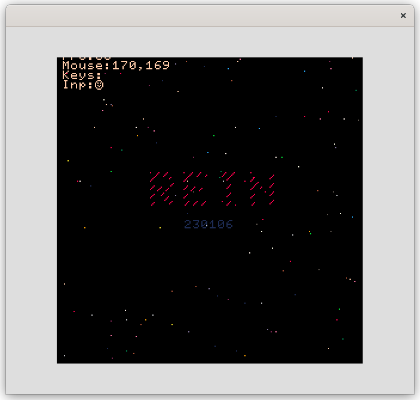
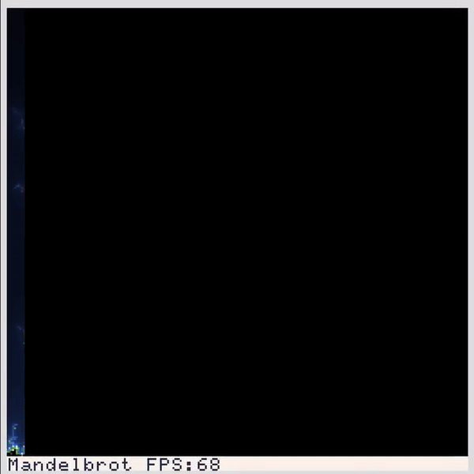

Рисуем Множество Мандельброта на Rein
Нравятся мне различные минималистичные проекты, они кажутся мне очень уютными и душевными.
Rein как раз является одним из таких уютных проектов, позиционирует он себя как минималистичный движок для 2D-игр и демок. Кстати, автор Rein так же является автором довольно известного интерпретатора текстографических приключений Instead.
На момент написания данной заметки у Rein всего две зависимости: SDL2 и luajit. На моем стареньком синкпаде он собирается очень быстро:
$ git clone https://github.com/hugeping/rein; cd rein $ time make cc -c src/platform.c -I/usr/include/SDL2 -D_REENTRANT -I/usr/include/luajit-2.1 -Wall -O3 -DVERSION=\"230106\" -o src/platform.o cc -c src/stb_image.c -I/usr/include/SDL2 -D_REENTRANT -I/usr/include/luajit-2.1 -Wall -O3 -DVERSION=\"230106\" -o src/stb_image.o cc -c src/lua-compat.c -I/usr/include/SDL2 -D_REENTRANT -I/usr/include/luajit-2.1 -Wall -O3 -DVERSION=\"230106\" -o src/lua-compat.o cc -c src/stb_image_resize.c -I/usr/include/SDL2 -D_REENTRANT -I/usr/include/luajit-2.1 -Wall -O3 -DVERSION=\"230106\" -o src/stb_image_resize.o cc -c src/bit.c -I/usr/include/SDL2 -D_REENTRANT -I/usr/include/luajit-2.1 -Wall -O3 -DVERSION=\"230106\" -o src/bit.o cc -c src/utf.c -I/usr/include/SDL2 -D_REENTRANT -I/usr/include/luajit-2.1 -Wall -O3 -DVERSION=\"230106\" -o src/utf.o cc -c src/thread.c -I/usr/include/SDL2 -D_REENTRANT -I/usr/include/luajit-2.1 -Wall -O3 -DVERSION=\"230106\" -o src/thread.o cc -c src/main.c -I/usr/include/SDL2 -D_REENTRANT -I/usr/include/luajit-2.1 -Wall -O3 -DVERSION=\"230106\" -o src/main.o cc -c src/gfx.c -I/usr/include/SDL2 -D_REENTRANT -I/usr/include/luajit-2.1 -Wall -O3 -DVERSION=\"230106\" -o src/gfx.o cc -c src/stb_truetype.c -I/usr/include/SDL2 -D_REENTRANT -I/usr/include/luajit-2.1 -Wall -O3 -DVERSION=\"230106\" -o src/stb_truetype.o cc -c src/system.c -I/usr/include/SDL2 -D_REENTRANT -I/usr/include/luajit-2.1 -Wall -O3 -DVERSION=\"230106\" -o src/system.o cc -c src/gfx_font.c -I/usr/include/SDL2 -D_REENTRANT -I/usr/include/luajit-2.1 -Wall -O3 -DVERSION=\"230106\" -o src/gfx_font.o cc -c src/net.c -I/usr/include/SDL2 -D_REENTRANT -I/usr/include/luajit-2.1 -Wall -O3 -DVERSION=\"230106\" -o src/net.o cc -c src/zvon.c -I/usr/include/SDL2 -D_REENTRANT -I/usr/include/luajit-2.1 -Wall -O3 -DVERSION=\"230106\" -o src/zvon.o cc -c src/zvon_mixer.c -I/usr/include/SDL2 -D_REENTRANT -I/usr/include/luajit-2.1 -Wall -O3 -DVERSION=\"230106\" -o src/zvon_mixer.o cc -c src/zvon_sfx.c -I/usr/include/SDL2 -D_REENTRANT -I/usr/include/luajit-2.1 -Wall -O3 -DVERSION=\"230106\" -o src/zvon_sfx.o cc -c src/synth.c -I/usr/include/SDL2 -D_REENTRANT -I/usr/include/luajit-2.1 -Wall -O3 -DVERSION=\"230106\" -o src/synth.o cc -I/usr/include/SDL2 -D_REENTRANT -I/usr/include/luajit-2.1 -Wall -O3 -DVERSION=\"230106\" src/platform.o src/stb_image.o src/lua-compat.o src/stb_image_resize.o src/bit.o src/utf.o src/thread.o src/main.o src/gfx.o src/stb_truetype.o src/system.o src/gfx_font.o src/net.o src/zvon.o src/zvon_mixer.o src/zvon_sfx.o src/synth.o -lSDL2 -lluajit-5.1 -lm -o rein real 0m2,466s user 0m1,882s sys 0m0,559s
Запускаем тестовый пример, чтобы удостоверится, что все работает:
$ ./rein demo/test.lua

Теперь можно попробовать написать простенькую демку. Для реализации я выбрал Множество Мандельброта.
local w, h = screen:size() local x = 0 local fps = 0 screen:clear(0) while sys.running() and x <= w do for y = 0, h do local i = 0 local cx = -1.3 + x / 500 local cy = -0.55 + y / 500 local zx = 0 local zy = 0 while (i <= 255) and (zx * zx + zy * zy) < 6 do local xt = zx * zy zx = zx * zx - zy * zy + cx zy = 2 * xt + cy; i = i + 1 end screen:fill(x, y, 1, 1, {i, i*2, i*4}) end screen:clear(0, 256-8, 256, 256-8, 7) gfx.printf(0, 256-7, 1, "Mandelbrot FPS:%d", fps) x = x + 1 fps = gfx.flip(1/60) end
Получившийся результат:

Так же стоить отметить, что в Rein входит редактор исходного кода, редактор графики, редактор звука, а так же клиент IRC :)
$ ./rein edit [file.lua] $ ./rein sprited $ ./rein voiced $ ./rein irc
Впечатления от использования Rein складываются положительные. На него точно стоит обратить свое внимание.